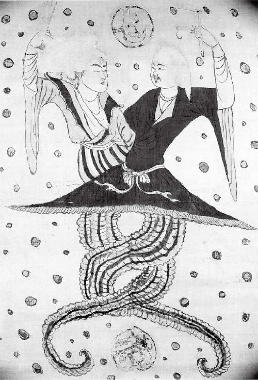
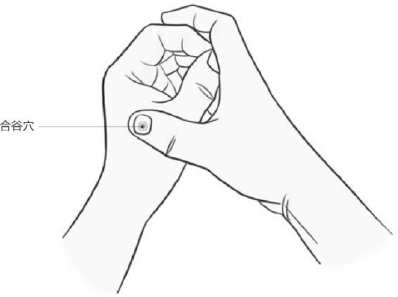
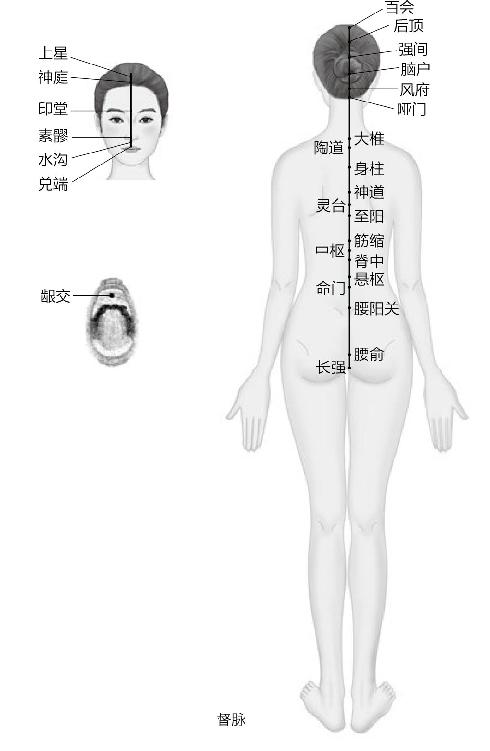
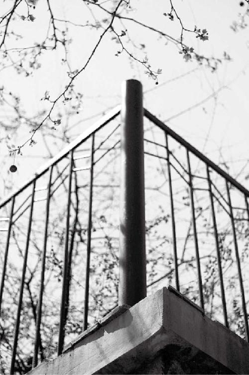

用盐水煮点核桃吃，或者把核桃烤熟了，然后剥去那层小薄皮儿直接吃。这些东西对肾气不足、不实的人具有特别好的滋补效果。
阳痿、早泄的人，光有子弹，没有能力把子弹送到它该去的地方，这叫有精无气；还有的人有气无精，打空炮，干了半天活，最后没精子或者只有死精子。
撒尿的时候要咬牙。排便时咬牙切齿，是为了不漏肾气。
不要妄想用意识或者意志去控制自已的性欲。当你以此为耻、感到内疚的时候，说明已经伤了神了。
经文：
丈夫八岁肾气实，发长齿更；二八肾气盛，天癸至，精气溢泻，阴阳和，故能有子；三八肾气平均，筋骨劲强，故真牙生而长极。
梁冬：前面我们讲到，女子是以“七”为周期来进行她的生理变革的。下面我们要聊的话题是跟男子有关的。男子的生理是以“八”为周期变革的。《黄帝内经》里讲男孩子“八岁，肾气实，发长齿更”。
男子的生理是以“八”为周期变革的。
很奇怪，女孩子叫“齿更发长”，而男孩子叫“发长齿更”。这中间有原因吗？
徐文兵：有。先说第一句“丈夫八岁”，你刚才直接就把“丈夫”翻译成男孩子了，是吧？我问一下，为什么男人叫“丈夫”？“丈”是什么意思？
为什么男人叫“丈夫”？
梁冬：“夫”我们知道，是比“天”更突出一点点，是吧？“丈”不知道。
徐文兵：以前女人们都称另一半为“丈夫”，现在都改称“老公”了。这个“丈”本身是个尺度单位，但8岁的男孩不可能有一丈长吧？所以，在这里它不是尺度的意思。
“丈”的甲骨文是这样写的，它底下是个“又”，象征着一个手，上面是个“十”字，象征着一把尺子。“丈”就是手里拿着尺子的那个人，他在丈量东西。
“丈”就是手里拿着尺子的那个人，他在丈量东西。
为什么手里拿个尺子的是男人而不是女人呢？这又是个问题。
梁冬：小时候都是我妈手里拿着一把尺子打我屁股。
徐文兵：那是戒尺，不是戒杖。“尺子”，我们用文言文的一个字来形容，叫什么？
梁冬：尺。
徐文兵：不对，叫“矩”。什么叫“规”？
梁冬：圆规。
徐文兵：“规”是画圆圈的。量横长竖直的尺子叫“矩”。依规能画圆，依矩能画方，所以说“不依规矩不能成方圆”。
为什么拿尺子的人是男人呢？什么叫男人？
梁冬：“男”字，上面有“田”，下面有“力”。
徐文兵：在田里干活出力的那个人就是男人。男人在自己家的田里干活，就得清楚自家有几亩地，这就涉及到丈量土地的问题。所以男人在干活之前，先要拿个尺子规划丈量土地。因此，“丈”其实是一种权力的象征。我们现在老说掌权，那什么叫掌权的人？
“丈”其实是一种权力的象征。
梁冬：就是掌握着权杖嘛，对不对？
徐文兵：“权”是一杆秤，那个秤坨叫“衡”。你交来的谷子是几斤，我说了算，那么我就是有话语权的人。所以掌权的人，也就是掌握度量衡的人。因而掌握重量、掌握尺度的人都叫“丈”。
掌权的人，也就是掌握度量衡的人。
男人手里拿着尺子，也就是“矩”，那么女人手里拿着的是什么？是规。
男人手里拿着尺子，也就是“矩”，女人手里拿的是规。
梁冬：真的吗？
徐文兵：我在研究这个问题的时候，就想，如果我的推论是正确的话，那么女人手里拿的应该是“规”。我们中国最早的祖先，那一对男女是谁？西方人说是亚当和夏娃。
梁冬：中国人认为是伏羲和女娲。
徐文兵：古代的很多壁画或者丝绸的帛画，上面所描绘的就是伏羲和女娲的像，底下像两条蛇一样缠绕在一起，上面是分开的两个人形，一个男人，一个女人。男的有胡子，是伏羲，他手里拿着的是尺子；女的是女娲，手里拿的是规。
在人像的上面还有一个太阳，太阳里面有一只三足的鸟，叫朱雀，底下还有月亮、玉兔，周围还有北斗以及其他的星辰。
女娲拿着圆规干什么？男人在田里干活之前需要拿一个尺子去量土地，那么女人干什么呢？你还记得我讲过巫的事吗，巫是干嘛的？
梁冬：巫是沟通天地鬼神的人。
徐文兵：对。不知道你在参观故宫的时候有没有注意到，太和殿前摆着一个称量用的斗，还摆着一个“日圭”。这个“圭”还有个名字叫“晷”（念guǐ），晷是圆的。我们经常说一句话叫“天圆地方”，拿尺子是为了量地，那么“规”就是用来研究天文星象的。
巫是沟通天地鬼神的人。
女娲拿个“规”是为了研究季节、天时的变化，从而制定历法。所以中国最早的历法叫“女娲历”。
梁冬：有一个成语叫“女娲补天”。
徐文兵：补什么天啊？不是说天漏了。我们都知道，公历的一年是365又1/4天，就是说比365天多了1/4天，每四年就加一天，也就是闰一天，把那一天补在二月的二十九号。其实在古代，那些大巫们已经意识到了这一天的缺失，就给补上了。
还有一种说法，说最早的历法是根据女人的月经周期来定的。标准的月经周期是28天，那时候一年有13个月，13个月乘以28其实是364天，还差一天，又是女娲把这一天补在了二月二十九号。也就是说，那时候一个月有28天，唯有2月是29天。总结一下，即在上古时期，男人们是在地里干活的，而女人们是研究这些虚无缥缈的，与天地沟通的玄学的。
在上古时期，男人们是在地里干活的，而女人们是研究虚无缥缈的，与天地沟通的玄学的。

右边的是伏羲，左边的是女娲，伏羲手里拿的是尺子，女娲拿的是规。
梁冬：所以现在的女青年动辄喜欢谈星相学，是有历史原因的。
现在的女青年动辄喜欢谈星相学，这是有历史原因的。
徐文兵：中国人研究的二十四节气，非常精确地描述了太阳对地球的影响。
中国人用的二十四节气是标准的太阳历，它是根据太阳的周期变化来制定的，跟阳历的日子基本都吻合。而我们用的所谓农历即阴历，是根据月亮的阴晴圆缺变化来制定的。
中国人用的二十四节气是标准的太阳历，它是根据太阳的周期变化来制定的，跟阳历的日子基本都吻合。而我们用的所谓农历即阴历，是根据月亮的阴晴圆缺变化来制定的。外国人虽然没有二十四节气，但有星相学。星相学跟我们的二十四节气也基本吻合。比如，梁冬你是冬至以前出生的吧？你是射手座？
梁冬：对。
徐文兵：星座也是根据太阳的变化来制定的。也就是说外国也有一些巫在观测天象。
梁冬：大道同源嘛。我有个问题，就是男孩子为什么8岁以前也叫丈夫？
徐文兵：就是从小就将他定下来，他们是要在田里耕作、流汗的，要负责任。
男人代表的是“方”，女人代表的是“圆”。举个例子，古代时，两国谈判参加者多为男人，并且一般用方桌，表示很严肃，很正规。而母性则具有一些包容性，表示圆融和谐，比如我们吃饭用的都是圆桌。
梁冬：男人是理性的。
徐文兵：他们是比较直的，不拐弯的思维，横平竖直。而女性是一种圆的思维。
梁冬：所以为什么有团圆饭？
徐文兵：那是最高级别的圆，就是我们讲的一个圆点。我们经常说的打仗，是因为什么？打土豪，分田地，分地不均而产生了纠纷。那谁去打仗？男人。而说和通常都是由女性来负责，所以中国的哲学，以及道家的这种思想，更接近于母性的思维。
中国的哲学，以及道家的这种思想，更接近于母性的思维。
梁冬：林语堂就说过，女人更适合去做政治家。
徐文兵：做领导！
我们中国讲的易经那个泰卦，就是最好的那个卦，是阴爻在上，阳爻在下，就是女子在上边做领导的。“上古天真论”也是先讲的女子，后面才说男人。尊重女性是有哲学基础的。
女人更适合去做政治家。
梁冬：所以如果说从这个角度来看，妇女节就不应该在三八，而应该在三七。理论上来说三八其实应该是男人节。
尊重女性是有哲学基础的。
“丈夫八岁肾气实，发长齿更”
梁冬：下面我们讲“丈夫八岁肾气实，发长齿更”，为什么用“肾气实”呢？
徐文兵：男子到16岁就“肾气盛”，跟女子是不一样的。
梁冬：女子7岁的时候肾气“盛”，而男子是“丈夫八岁，肾气实”。
徐文兵：我们可以明显看出，男孩子的生理发育要比女孩子晚了一年。另外，从身心角度来讲，男孩子懂事、开窍也比女孩子晚。
男孩子的生理发育要比女孩子晚一年。
梁冬：晚很多哦！
徐文兵：一般女孩子一来例假，就懂了很多事情。
梁冬：跟小大人似的。
徐文兵：男孩子还懵懵懂懂。
梁冬：女孩子都已经知道怎么跟老师告状的时候，男孩子还傻乎乎地被告状呢。
徐文兵：这是一种天然的规律，我们要遵循它。
一个精血充足的男性，他的头发根根直立，特别粗壮。而且8岁以后，他头发生长的速度特别快，基本上一个星期就得理发，否则就毛毛糙糙的，很难看。
梁冬：毛头小子。
徐文兵：毛毛糙糙其实是精血充盈的一个表现。往后我们会讲，男人脱发、发鬓斑白都是精血弱的表现。
男人脱发、发鬓斑白都是精血弱的表现。
梁冬：所以女子七岁，齿更发长。丈夫八岁，发长齿更。
徐文兵：男孩子的变化先表现在头发上，之后才是牙齿。8岁以后，男孩子就脱落乳牙换成了新牙。但是有些肾气或者肾精血比较弱的孩子，乳牙就换不全。对这些换牙晚，或者有些牙换不掉，或者牙缝特别宽的男孩子，家长要有意识地用一些食疗或者中药药补的方法，帮他把肾气充实了。
对这些换牙晚，或者有些牙换不掉，或者牙缝特别宽的男孩子来说，家长要有意识地用一些食疗或者中药药补的方法，帮他把肾气充实了。
梁冬：可以做什么呢？
徐文兵：可以通过一些饮食和药补的调理方法，但要提醒大家，甜的东西对肾气的伤害是最大的。比如，我们都知道吃了含糖分很高的西瓜会不停地去撒尿，而且吃糖过多会坏牙。不过甜的东西都补脾，对脾胃有好处。在五行学说里面，脾胃属于五行里面的什么呀？
甜的东西对肾气的伤害是最大的。
梁冬：土。
徐文兵：肾呢？属什么呀？
梁冬：水。
徐文兵：它俩啥关系？
梁冬：相克。
徐文兵：是土克水。
你吃甜的东西，它增强了脾胃的功能，但与此同时，它肯定要削弱肾的功能。所以，我建议这个年龄段的孩子一定要少吃或者干脆不吃糖。
梁冬：那应该吃些什么味道的东西呢？
徐文兵：吃苦，苦坚肾。比如，炒得焦焦黄黄的硬果、坚果等，这些对小孩子和老年人都有好处。肾主志，老年人肾气衰了以后，就老忘事。
用盐水煮点核桃吃，或者把核桃烤熟了，然后剥去那层小薄皮儿直接吃。这些东西对肾气不足、不实的人具有特别好的滋补效果。
梁冬：我现在就是这样啊！
徐文兵：有些老年人短期记忆特别不好，一想都是几十年前的事，脑萎缩了，怎么办？用盐水煮点核桃吃，或者把核桃烤熟了，然后剥去那层小薄皮儿直接吃。这些东西对肾气不足、不实的人具有特别好的滋补效果。
肾主藏，就是说肾气实的时候，你兜得住。肾气虚的则憋不住尿，还有人稍微一咳嗽、一笑，尿就出来了。肾气不足的小男孩则可能尿床。所以对这些孩子，我们就要顺应天道，在他该换牙却没换，或者牙缝特别宽，牙齿稀落；以及到了“发长”还是一头小黄毛的时候，赶紧补肾。
肾气不足的小男孩可能尿床。
梁冬：8岁就补肾？
徐文兵：那怎么了？
梁冬：有可能更有助于他打下一个比较好的基础，对不对？
徐文兵：对，否则长大了以后，他就漏得更厉害。
做什么事情都要趁早，未雨绸缪是聪明的健康之术。
“二八肾气盛，天癸至”
梁冬：“二八肾气盛，天癸至”是我们接下来要讲的内容，我想问徐老师，为什么女子在第一个七年的时候，就已经“肾气盛”了，而男子要到二八16岁的时候，肾气才盛？
徐文兵：男子从8岁到16岁这个过程中，肾气逐渐由实变得特别盛大、充盈。到了虚岁16岁的时候，第二性征开始发育。
男子从8岁到16岁这个过程中，肾气逐渐由实变得特别盛大、充盈。到了虚岁16岁的时候，第二性征开始发育。
前面讲过，女子“天癸至，任脉通，太冲脉盛”，冲脉盛了以后，她的血就往下流，所以女人不长胡须。
梁冬：那为什么男人长了呢？
徐文兵：男人不流血，他冲脉往上走，由于冲脉是分布在口唇周围的，所以他就开始长胡须。女人月经不来了，也会长胡须；男人冲脉虚了，胡子就会很少。如果冲脉里边没有气血，这人就叫“天阉”。
梁冬：我有个问题想问一下徐老师，我8岁到16岁那个阶段特别喜欢流鼻血，每个月都要流，定期流，每次三天。这是为什么呢？
徐文兵：你属于男人中的男人。
梁冬：极品。
徐文兵：我有个爱好，平时喜欢研究一些名人的身体状况和病历，我知道有几个和你一样的例子。比如，咱们敬爱的周总理阳气就特别旺。
周总理阳气特别旺。
梁冬：他以前也这样吗？
徐文兵：也流鼻血。你去查一下他的回忆录，或者别人给他写的传记。里面就有记载，说他到了冬天都不能穿太厚的衣服，一旦裹得太严，马上就流鼻血，这就是典型的阳气旺的表现。
文革期间，周总理一天工作二十一个小时，只是在去机场的路上，在车上打一个盹儿。但是一见到客人，他马上就容光焕发。大家描述周总理的时候，也都说总理的眼睛炯炯有神，这也说明他阳气非常旺。
梁冬：可我发现自己总是说事忘事。年轻时候的事儿、幼儿园的事倒是记得挺清楚的，比如哪个女同学等等。
徐文兵：男人肾气盛了以后，他首先要长喉结，要变声，然后长胡须；接着，骨骼会变得非常粗壮，开始长个儿。这些都是男人从16岁开始出现的体征变化。
男人肾气盛了以后，他首先要长喉结，要变声，然后长胡须；接着，骨骼会变得非常粗壮，开始长个儿。
“精气溢泻”
梁冬：接下来这句“精气溢泻”，是说他的发育也趋于成熟了，对吧？
徐文兵：就是说，在肾气盛的情况下，他除了出现那些第二性征的变化，还有一个最主要的变化，就是出现射精、遗精的现象。
梁冬：是的。我这里插一个小问题，徐老师，我经常看到“泻”和“泄”，这两个都是拉肚子的意思吧？到底有什么不一样？
徐文兵：这两个字既然写法不一样，它的意思肯定也不一样，到底哪里不一样呢？我们在以后的章节中会专门讲到。
先说精，这个精是指看得见的物质，我们这里单说它，就是说生殖之精，指男性的精液，包括里面的精子。气，就是指我们讲的元气，也就是那种由肾精化生的能量。
梁冬：“energy”。
徐文兵：有了“精”就等于有了子弹，有了“气”，它就有能力把子弹射出去。
梁冬：有可能没有能力射出去吗？
徐文兵：有啊，比如阳痿、早泄的人。他光有子弹，没有能力把子弹送到它该去的地方，这叫有精无气。还有的人有气无精。
阳痿、早泄的人，光有子弹，没有能力把子弹送到它该去的地方，这叫有精无气；还有的人有气无精，打空炮，干了半天活，最后没精子或者只有死精子。
梁冬：打空炮。
徐文兵：干了半天活，最后没精子或者只有死精子。
梁冬：咱们还是说回这个“精气溢泻”。
徐文兵：有“精气”，就说明有物质基础，而且很足，并且元气也很足。既有物质又有能量，或者说有阴又有阳，会产生什么结果呢？要么“溢”，要么“泻”。“溢”和“泻”也不一样。打个比方，水开了，锅里面的水溢出来了，它是从哪儿出来的？
梁冬：从锅边儿。
徐文兵：对，从上面出来的。泻呢？开闸放水，是从底下泻出来的。
“精气溢泻”，首先会出现一个情况叫“精满自溢”，就是说精气、精液或者是力量，积攒到一定程度，你不给它加任何外来的力量和刺激，它也会排出来。
这就是16岁以后男孩会出现的梦遗现象，这是他生理成熟的表现，也是健康的一种体现。所谓泻，就是人为加了一些力量，有时候指性行为，比如男女交合，或者自己把它放出来，即“手淫”。
16岁以后男孩会出现梦遗现象，这是他生理成熟的表现，也是健康的一种体现。
梁冬：打手枪。
徐文兵：所以“精气溢泻”是一种生理表现，很正常。
“阴阳和，故能有子”
梁冬：“阴阳和，故能有子”怎么解？
徐文兵：“阴阳和”代指男女的交合。女孩子14岁成熟了，男孩子16岁也成熟了，从理论上讲，这时候就可以生孩子了。但是我在讲女性的时候说了，女性21岁才完全发育成熟，男孩子则要到24岁。
也就是说，从理论上讲，男孩16岁就可以有孩子了，但是如果能把这些“精”和“气”省下来，供自己生长发育的话，就会发育得很好，长得很壮，并且智力和慧力也会得到提升。
从理论上讲，男孩16岁就可以有孩子了，但是如果能把这些“精”和“气”省下来，供自己生长发育的话，就会发育得很好，长得很壮，并且智力和慧力也会得到提升。
梁冬：以前讲过“智”和“慧”不一样，“急中生智”“静能生慧”。
徐文兵：如果能节省下来的话，就能够去发展自己的智力和慧力。这就是说理论上可以有孩子了，但事实上《黄帝内经》不建议你那么去做。女人21岁、男人24岁时长到极限了，这时候是他们的最佳生育年龄。
梁冬：咱们国家说的24岁以前都叫“早婚早育”，那什么时候，或者说多少岁以后结婚生孩子属于“晚婚晚育”呢？
徐文兵：那就不知道了，我看还有80多岁才结婚的呢。
梁冬：哈哈哈！那说明人家也活明白了。
“三八肾气平均，筋骨劲强，故真牙生而长极”
梁冬：“三八肾气平均，筋骨劲强，故真牙生而长极”，讲的是肾气平均了之后的状况。
肾气除了要支撑人的生育功能以外，还有富余的部分就会分布到全身的各个部位。
徐文兵：我们在讲女性的时候也讲到肾气平均。肾气除了要支撑人的生育功能以外，还有富余的部分就会分布到全身的各个部位。
梁冬：就像我们给香槟塔倒酒。倒在第一层，慢慢渗到第二层、第三层、第四层……实际上，我们的身体，包括头脑、四肢、骨髓……的发育，都得靠肾气。
徐文兵：这时候男子就开始长个儿，饭量也随之变大，所以过去人们常说“半大小子，吃死老子”。
梁冬：为什么筋骨是“劲强”，而不是“强劲”呢？
徐文兵：筋，对应的是“劲”。“劲”是一种跳跃、有弹性的感觉，形容筋和肌腱是有弹性的。骨，对应的是强，老子就曾讲过“弱其志，强其骨”。因此，我们说骨头是强的，筋是劲儿的。
梁冬：我觉得自己还是有进步的，你看我就能问出为什么是“筋骨劲强”，而不是“筋骨强劲”。
徐文兵：呵呵，对。
梁冬：“故真牙生而长极”的“长极”怎么解？
徐文兵：所谓“长极”就是说，男人到了24岁就别再指望长高了。老百姓有句俗话叫“二十三，还要蹿一蹿”，意思是到了23岁还有可能长高，但过了24岁就不行了。
男人到了24岁就别再指望长高了。
男性要想长个儿，在24岁之前还是有希望的。
男孩子上中学时可能并不起眼，但大学毕业后，可能都会长得特别高。我的好几个中学同学就是这样，他们的个儿都是在上大学期间长起来的。
梁冬：我好像也是这样。
徐文兵：24岁之前蹿起来了。所以，男子24岁之前，用一些中医所说的方法使肾气能够平均，或者用能使“肾气实”或者“肾气盛”的方法调养一下，就能有助于长个儿。过了这个年龄，就别想了，除非穿高跟鞋。
男子24岁之前，用一些中医所说的方法使肾气能够平均，或者用能使“肾气实”或者“肾气盛”的方法调养一下，就能有助于长个儿。
“故真牙生而长极”
梁冬：“故真牙生而长极”的“真牙”是指什么？
徐文兵：真牙就是我们说的智齿。
梁冬：有一些人觉得智齿没有什么用，就拔了。这样好吗？
徐文兵：不长智齿，说明肾气不太足；长出来智齿，恭喜你，你的肾气很足，所以槽牙也就是“倒头牙”都长出来了。如果长智齿特别疼，那么拔了也无所谓。
不长智齿，说明肾气不太足；长出来智齿，恭喜你，你的肾气很足，所以槽牙也就是“倒头牙”都长出来了。
梁冬：说到此处，徐老师，我向您请教一个问题，我一个朋友说他在珠海认识一个人，那个人给人摁过穴位之后，不用工具，只用手就能把牙齿拔下来，别人也不觉得疼。而我们到那些所谓的牙科诊所拔牙，不光要打麻药，而且可能鼓捣半天都拔不下来。只摁几个穴位就能达到无痛拔牙的目的，您说有这个可能性吗？
徐文兵：有。这个人很有内力，他可能练过功夫。举个例子，如果我们要拔上颚的牙齿，那么点一下合谷穴就可以了，因为合谷穴属手阳明大肠经。
梁冬：合谷穴在哪里啊？
徐文兵：就是大拇指和这个食指中间的这个穴。
梁冬：有点像虎口。
徐文兵：就是虎口。手阳明大肠经就是从这儿走到了我们的上牙龈。以前我们做针刺麻醉，就是在合谷穴扎一针，或者强刺激，或者通上电。这时候你给他切开肚子做手术，他都没有知觉，何况拔牙。
以前我们做针刺麻醉，就是在合谷穴扎一针，或者强刺激，或者通上电。这时候你给他切开肚子做手术，他都没有知觉，何况拔牙。
梁冬：怪不得我小的时候牙疼，我妈就叫我捏虎口。我以为我妈是让我转移疼痛位置呢。

徐文兵：其实也是这样的，这叫调神。我们之前讲到战士冲锋时，肠子出来都没感觉，为什么？就是因为心不在“焉”。他的“神”和“气”不在自己的身体上，等兴奋劲儿过了，“神”和“气”回来了，他才感觉到疼痛。
梁冬：据说很多人是在长征结束之后，到了目的地才死的。那也是因为他有一股一直支撑着他的劲儿。
据说很多人是在长征结束之后，到了目的地才死的。那是因为他有一股一直支撑着他的劲儿。
徐文兵：到目的地以后，泄掉了。所以这个“虎口拔牙”是有道理的。
梁冬：传说中的“虎口拔牙”原来是这个意思。
徐文兵：就是按着虎口去拔自己的牙。
梁冬：真的有可能。
梁冬：徐老师，跟您聊过之后，我有一个很重要的收获。以前我一直以为只有老头才需要补肾的，现在听您这么一说，我才知道原来8岁就可以补肾，为身体打基础。
另外，我想问一下，除了比较复杂的补肾方法以外，比如把核桃加点盐水煮一煮、煎一煎吃等等，有没有比较简便易行的补肾方法？最好是上课、坐公交车、等电梯的时候，都能够用的方法。
徐文兵：当然有了。我们说补肾是补漏洞，如果你有漏精的问题，首先要补住漏洞。
补肾是补漏洞，如果你有漏精的问题，首先要补住漏洞。
梁冬：您讲过“补”和“益”是不一样的，“补”不是加，而是像补锅一样，避免漏，是吧？
徐文兵：对。补肾的方法从古至今传下来的有很多，但那些呢，都不被人重视。这里我给大家说两个，第一个就是咬牙切齿。
我上中学的时候，有一位生物老师，因为患了严重的糖尿病而开始研究中医。他告诉我们一件事，撒尿的时候要咬牙。
撒尿的时候要咬牙。排便时咬牙切齿，是为了不漏肾气。
梁冬：这是什么原理呢？我也听说过。
徐文兵：因为牙是属肾的，大家都知道。
梁冬：这个知道。
徐文兵：排便功能也与肾有关。排便时咬牙切齿，是为了不漏肾气。
梁冬：如果跟西医说这种方法，他们肯定觉得你疯了。
徐文兵：所以这个事情很不被人重视。上了大学后，教我的很多中医老师和太极、形意的老师，都无一例外告诉我这个方法。我们都知道吃饭的时候别说话，现在我要告诉大家，小便的时候也别说话，不论男女，都要养成这个习惯。
吃饭的时候别说话，小便的时候也别说话，不论男女，都要养成这个习惯。
梁冬：我们经常看见有一些人上厕所还在打电话。
徐文兵：那会儿说话或者不咬牙，都是在漏气。其实古代一些人在静坐、站桩练功时，他能感觉到这种气往哪儿走，是怎么散掉的，所以他到那时就咬牙。
徐文兵：另外一个补肾的方法，就是“撮谷道”，我们叫“提肛”。什么叫“提肛”呢？就是有意识地把肛门那儿撮起来。
梁冬：括约肌嘛。
徐文兵：对，肛门括约肌。就好像你要排便但却忍着的那个状态，古人管这叫“撮谷道”。古人说话很含蓄，把肛门叫谷道，把男性、女性撒尿的器官，叫水道。肛门它本来是个孔，是个窟窿，当你把它撮起来的时候，这个窟窿就闭合了。
督脉主一身之阳，男人最重要的脉是督脉。督脉往后走，第一个经过的就是肛门。你如果不把这个窟窿闭起来，气就过不去。接着，它经过我们的尾椎，沿着脊椎就上去了。这时候督脉才算通了。我们道家练功站桩的时候，必须“舌添上颚搭鹊桥”，底下就要提肛。
督脉主一身之阳，男人最重要的脉是督脉。
梁冬：徐老师你看见我脸上的表情就可以了解，我已经在做这方面的努力了吧。看来好多平常懂得的东西，还得知道它的原理，这样你才会真正地去实行。
看来好多平常懂得的东西，还得知道它的原理，这样你才会真正地去实行。
徐文兵：祖先教的东西肯定是对的，我们就需要照着去做。
祖先教的东西肯定是对的，我们只需要照着去做就行。
梁冬：那您说是不是要长期坚持，或者说有节奏地做呢？
徐文兵：不要太刻意了，除了站桩之外，平时行、走、坐、卧都可以默默练功。
我在美国的时候，参观过国立卫生院。那儿的大夫给我们介绍了一些解决产妇问题的方法。比如，女人生完孩子后，会有阴道松弛的问题，于是她对夫妻生活就会比较厌倦；还可能有子宫脱垂、下垂的问题。医生给这些女性提供了一个恢复方法，以锻炼她的阴道括约肌，也就是PC肌。
这个方法就是做提肛训练。我告诉他们说，你们现在依照科学技术发现的这个方法，跟我们老祖宗几千年前掌握的方法不谋而合。
现在依照科学技术发现的提肛方法，跟我们老祖宗几千年前掌握的方法不谋而合。
梁冬：据说，现在有一些所谓的很高端的女性瑜珈会馆，很多著名演员都是会员，都在参加其中一门很贵的训练课程，就是收缩、提肛。

徐文兵：男性的发育，其实就是一个“精化气，气化神”的过程。但有很多人在这个阶段没有发育好，他的“精”漏掉了，没化成“气”。这就直接影响到了他一生的幸福。
据我的经验来看，女性堕胎最伤精，伤精导致伤神，进而产生抑郁症。而男性漏精、失精，也会产生抑郁症。我举几个典型的病例，一个8岁小男孩玩滑杆的时候，刺激到了自己的那个玩意儿。
女性堕胎最伤精，伤精导致伤神，进而产生抑郁症。男性漏精、失精，也会产生抑郁症。
梁冬：小雀雀。
徐文兵：然后就有一种快感，于是他就养成了这种习惯。
梁冬：什么叫滑杆啊？
徐文兵：就是可以爬上去，然后溜下来的那种杆子，它能给人一种刺激。
还有一些诱因会导致漏精，比如以前一家人都睡一张炕上，父母做有些事情也不避讳，让8岁的孩子过早懂事了。还有就是误交损友，一帮孩子在一起传播做这个事情，使得16〜24岁，甚至8〜16岁的有些孩子，天天在漏精。
中医讲，阴阳交合有个互补作用，光自己弄，就叫“孤阳不生，独阴不长”。《红楼梦》里的贾瑞就是因为没有阴的滋润，没有把欲火平复的阴的那一面，所以他越做越想做，越做越控制不住，越做虚火越旺，漏得也越厉害。他这样做先伤的是精，后伤的是神。
《红楼梦》里的贾瑞就是因为没有阴的滋润，没有把欲火平复的阴的那一面，所以他越做越想做，越做越控制不住，越做虚火越旺，漏得也越厉害。
现在有的人意识到这样做不好，就去找医生，医生给他的观点是什么呢？说没关系，精液里面就几颗蛋白质。
他这儿很痛苦，医生又没招，还说是因为思想负担过重，没事儿。结果搞得现在很多人都活在这种半生半死的状态。
梁冬：透支的状态。
徐文兵：这些人要先补精，不要让它再漏，然后再清清心火。这种情况就像前面的章节我们讲到的“嗜欲”，就是有些欲望由于没有得到正常满足，就会变得很偏、很怪，以另一种特殊的方式表现出来。具有这种欲望的人一定要找医生去调理。
有些人得抑郁症的部分原因就是精没了，物质基础伤掉了，哪儿还有神？所以他们就觉得活着没意思。
有些欲望由于没有得到正常满足，就会变得很偏、很怪，以另一种特殊的方式表现出来。
梁冬：中医讲，精神精神，不是神经神经，就是先有精，后有神。
徐文兵：先有物质后有神，先有“阴”后有“阳”。
梁冬：中国文字微言大义，顺序都有讲究。
徐文兵：所以我们老说“阴阳学说”，却不说“阳阴学说”；老说“精神”，却不说“神经”。
我建议大家，不要妄想用意识或者意志去控制自已的性欲。当你以此为耻、感到内疚的时候，说明已经伤了神了。这时候要宽慰自己，明白这是一种伤害自己的病，去找医生看病就行了，没必要为此去念咒，或者接受某种宗教，硬是要戒掉它。我想跟大家说，你的意志战胜不了它，还得从生理上去调整。
不要妄想用意识或者意志去控制自已的性欲。当你以此为耻、感到内疚的时候，说明已经伤了神了。
你的意志战胜不了欲望，还得从生理上去调整。
还有的人可能会因此而谴责自己，每天想着，我跟上什么鬼啦？犯了什么戒了？遭什么报应了？这些都是不对的。要明白，这是很正常的一种生理现象，就跟感冒发烧一样，没必要有那么多心理负担。
要明白，欲 望是很正常的一种生理现象，就跟感冒发烧一样，没必要有那么多心理负担。
梁冬：我估计很多中学生、大学生，都有类似的压力，他们也知道这个事不对，这样做对身体不好，但是就是不知道该怎么办。
徐文兵：我有时候想，我们那个年代的教育其实有非常可取的地方，比较符合人性。
梁冬：你们那个时候受什么教育了？
徐文兵：我研究男性、女性生理发育的时候，发现女性在14〜21岁之间有个排斥异性期。男性到了16岁，就是性成熟以后，也不是急火火地去找女人，而是也有个排斥异性期。
男性到了16岁，就是性成熟以后，也不是急火火地去找女人，而是也有个排斥异性期。

梁冬：有吗？
徐文兵：有。但现在这个社会已经没这个时期了。
梁冬：对啊，我就是没看到嘛。
徐文兵：现在都是早熟、早恋，恨不得立刻就扑上去。我们那个年代，大家一般是12岁上初中，高中毕业时是18岁。那会儿我们男女生是不说话的，并且不是假装不说话，而是心里真的不愿意跟异性说话。我们那会儿关注打打杀杀，看《水浒》，然后拉帮结伙，整天疯狂打闹。
梁冬：一下课就斗鸡，把一只脚抬到另外一条腿上。
徐文兵：那叫做“骑马打仗”，那时大家都通过这些方式表现自己的勇猛阳刚之气。还有件特别有意思的事情，就是如果有人说你在搞对象了，那就是奇耻大辱！我记得我被谁说过一回，哎呀，那一整天我都觉得特别没脸见人。
梁冬：事实上有没有？
徐文兵：没有，当时确实是诬陷。别人说我，谁不知道你啊，跟那谁谁谁搞，当时我真觉得是奇耻大辱。现在的小孩儿呢？以此为荣！
梁冬：不以为耻，反以为荣。
徐文兵：其实这是漏精的表现。我建议大家还是要顺应天性，稍加引导，让男性充分利用16〜24岁这个黄金的年龄段，去发展他的勇力、尚武精神、智力等。我们现在看男人不像男人，女人不像女人，问题就在于男性16〜24岁这个阶段、女性14〜21岁这个阶段都没过渡好。
要顺应天性，稍加引导，让男性充分利用16〜24岁这个黄金的年龄段，去发展他的勇力、尚武精神、智力等。
我们现在看男人不像男人，女人不像女人，问题就在于男性16〜24岁这个阶段、女性14〜21岁这个阶段都没过渡好。
梁冬：经常有各种老师教导说，当你为这些事情烦恼的时候，就去冲个冷水澡。
徐文兵：没用。这个窍一旦开了，就堵不上了。
梁冬：那怎么办呢？
徐文兵：最好就是处在懵懂之中不开这个窍。
梁冬：那不可能嘛。
徐文兵：已经开了，我觉得那就顺应自然吧。我理想中的教育模式是这样的，男女分校培养。这样，男孩子有他的勇猛阳刚之气，女孩子有安静、内敛、含蓄的阴柔之气。这种做法也是为和谐美好的社会奠定基础。否则，阴不阴，阳不阳，哪儿来和谐可言呢？
16〜24岁这个阶段，是男性的黄金时期，一定要把持好。